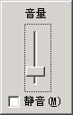

电脑操作基础
十三、调节音量 返回
在听音乐或者看视频时，需要调整音量，有时候也需要把声音关闭，设置成静音，
1、调节音量
1）在桌面下边的任务栏右边有一个“系统托盘”，里面有一个小喇叭图标，这个就是音量控制图标；

2）瞄准小喇叭，单击鼠标左键，注意瞄准了再点，就可以出来一个小面板，里面有一个滑块；

3）上下拖动中间的滑块，就可以改变音量大小，同时音箱里会发出“咚”的一声；
4）点击下边的白色复选框，打勾下边的“静音”，就可以关闭声音，音箱里没有声音了，
小喇叭上出现一个红色的圈，表示处于静音状态，再点一下去掉勾，声音又出来了；
2、音量控制
1）瞄准小喇叭，然后双击左键两下，可以打开音量控制面板；

2）其中，第一个是调节所有音量，也就是总音量，第二个可以调节波形输出，也可以调节音量，第三个软件合成器，可以调节MIDI音乐的音量大小；
3）在选项菜单里还有录音和高级选项，也可以进去看一下；
本节学习了在WinXP中调节音量大小的基本方法，如果你成功地完成了练习，请继续学习下一课内容；
本教程由86团学校TeliuTe制作|著作权所有
基础教程网：http://teliute.org/
美丽的校园……
转载和引用本站内容，请保留版权信息和本站链接。